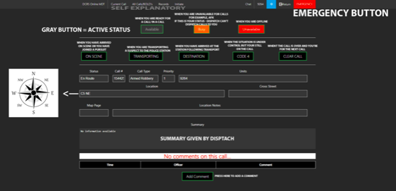

How to use the MDT.
- Go to https://dcrscad.com/mobile/ and press login up the top and log in
- Here you have your MDT
- You should first set your status, the 3 buttons under "Modify Status" the greyed out Hutton is your current selection.
- When a call comes through the MDT, it will show here with any additional information
- When a call comes through you can set what the situation is, by pressing either the On Scene-(When you're on scene), Transporting (transporting a suspect/patient), Destination (When you arrive from Transporting), Code 4 (when the call is under control) or Clear Call (When you're done)
- You can add a comment to the call by pressing "Add Comment" all units and dispatch on the call can see this.
- At the top there is "Initiate" you can use this button when either there is no dispatch or when you initiate a traffic stop. Please set Location to your Map co-ordinates and heading (N for North and NE for North East) -- Letter then Number and way you're heading (C5 S)
- Up the top, there is a Chat Button which will open a chat window for the whole department.
- There is a black button which will turn on Dark Mode.
- The big red button will engage an Emergency Button, this will send an alert to dispatch and all other officers, please don't test this. It can be turned off from the blue writing underneath the Red Emergency Writing if you ever have to use it.
- To get back to your current call from another tab don't press return, press "Current Call" You can see All calls and BOLOs up the top under "All Calls/BOLO's".
- If you need help contact our "@Community Support Officer"'s